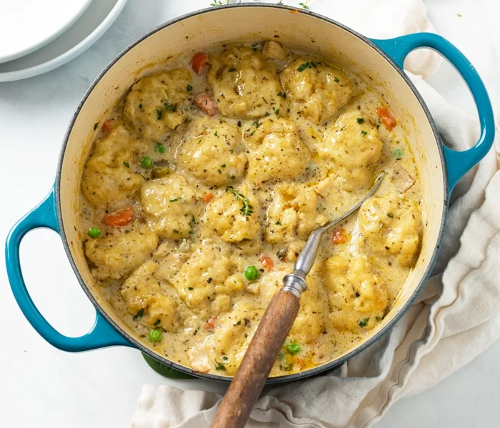

Chicken and dumplings

Description
Chicken and dumplings is a type of soup which includes chicken mixed with dumplings usually made from biscuit dough. It can also be served with vegtables. The chicken is usually simmered, then dough is kneaded into small squares and cooked. Last, vegtables and chicken are cut to smaller pieces and returned to the pan to cook for addidional time before serving. It is a popular comfort food, and a popular dish in the midwest and southern U.S. The consistency of the dish can vary in terms of how thick the soup can be, there are also different variations on how the dumplings are made.
Ingredients
- 1/4 cup butter
- 2 ribs celery, quartered
- 1 large carrot
- 1 small onion
- 1 teaspoon mashed garlic
- 2 large bay leaves
- 1/2 teaspoon dried thyme
- 1/2 teaspoon salt
- 1/2 teaspoon ground black pepper
- 1/8 teaspoon poultry seasoning
- 2 pounds bone-in chicken breasts
- water to cover
- 2 tablespoons self-rising flour
- 1/4 cup cold shortening
- 1/4 cup chicken broth, slightly chilled
Steps
- In a large pot over medium-high heat, melt butter. Then add celery, carrot, onion, garlic, bay leaves, thyme, salt, pepper, and poultry seasoning. Stir to combine flavors, around 5 minutes. Next, make room to add chicken and cook until browned, around 3-5 minutes per side.
- Pour water to cover the chicken by about 3 inches, bring the water to a boil. Stir, making sure to scrap the browned parts off the bottom of the pot. Bring the heat down, simmer until chicken is tender, around 1 hour. Transfer both the chicken and the carrots out of pan to let them cool off.
- Put 1/4 cooking liquid into a bowl, let it cool for around 5 minutes. Put 2 tablespoons of flour, stir back into the pot.
- Put 2 cups of flour in a large bowl, cut in shortening with 2 knives until mixture forms pea-sized bits. Mix in chilled chicken broth until dough is combined.
- Turn dough out onto a floured work surface. Knead around 5 to 6 times; pat down to 1-inch thickness. Sprinkle lightly with flour; roll out to about 1/8-inch thickness. Cut dough into squares with a sharp knife.
- Drop the squares in batches, into the simmering cooking liquid. Move the squares to the side with each addition. Leave the pot partially covered; simmer until dumplings are firm, about 12 minutes. If any dumplings stick together, seperate them. Remove from the heat; keep covered.
- Bone chicken; cut into bite-sized pieces and return to the pot. Chop carrot; return to the pot. Cool chicken and dumplings, about 30 minutes, before serving.